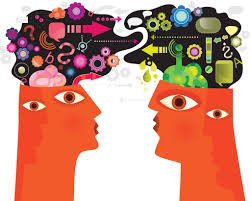

Introduction
Brief overview of the course
The course covers topics in syntax (sentence structure) and semantics (linguistic meaning) with a clinical focus. It adopts a mainly descriptive approach, describing language structure rather than trying to explain it. Nonetheless there will be brief introductions to linguistic theories (Construction Grammar and Chomskyan Generative Linguistics).
Getting help
I can be contacted on nick.riches@newcastle.ac.uk. My office is Room 1.9 on the left hand side on the way to Fozzie the photocopier. On my door is a picture “Captain Auxiliary Verb,” a superhero I have invented which could possibly be my gateway to fame and fortune.
My Drop-in Session for Semester 2 is at 12 - 1 on a Wednesday
Please feel free to just ‘drop in’ (but please also contact me in advance if at all possible)
Accessing this web page
You may be viewing this web page in Blackboard. If you wish to access this page outside of Blackboard please go to https://nickriches.github.io/linguistics_course/#01_linguistics (please right click, and select ‘open link new window’, or else copy and paste into the address bar of your browser). This is a better way to view the website if you are using a mobile phone or tablet. Also the menu system (on the left) will only work if you view the website outside of Blackboard.
Reading materials
Main reading materials
The main text is Borjars, K., & Burridge, K. (2010). Introducing English Grammar (2nd ed.). Hodder Education. (this link will take you to the library website where you can see available copies)
There is also an excellent book on linguistics which is written for speech and language therapists McAllister, J., & Miller. J (2012). Introductory Linguistics for Speech and Language Therapy Practice. Wiley-Blackwell. (library link)
Crystal, P. D. (2004). Rediscover Grammar (2nd ed.). Longman. is a good reference book for learning grammatical, but be warned, occasionally his use of terminology is slightly idiosyncratic (library link)
Secondary readings
The library has a wide range of introductory books on linguistics.
Black, M., & Chiat, S. (2003). Linguistics for Clinicians A Practical Introduction. Hodder Education is specifically designed for clinicians, so you might wish to take a look at this. However, the book does involve a fairly steep learning curve.
The following two books are good introduction to generative (Chomskyan) linguistic theory. Be warned, they contain lots of syntactic trees, which we will cover only briefly in the course. The Carnie is exception- ally readable, and probably the best introduction to generative linguistic theory I have come across.
- Carnie, A. (2002). Syntax a generative introduction. Blackwell Pub.
- Haegeman,L. (1994). Introduction to Government and Binding Theory (2nd ed.). Wiley-Blackwell.
Burton-Roberts, P. N. (2010). Analysing Sentences Introduction to English Syntax (3rd ed.). Pearson Longman. is another good introduction, written broadly within the generative framework. Again, it contains trees!
Further reading
Pinker, S. (1994). The Language Instinct. The Penguin Group. is probably the best all-round introduction to linguistics and language psychology. It is written with real verve and panache, and is immensely readable. However, Pinker is sometimes guilty of simplifying facts to suit has argument (it is popular science after all).
If you wish to read about non-generative approaches, Adele Goldberg has written a couple of great books, but some mind find them difficult.
- Goldberg, A. E. (1995). Constructions a Construction Grammar approach to argument structure. University of Chicago Press.
- Goldberg, A. E. (2006). Constructions at Work The Nature of Generalization in Language. Oxford, UK: Oxford University Press.
Main readings for topics in semantics
The two main semantics texts are;
- Saeed, J. I. (2010). Semantics. John Wiley & Sons. library link
- Cruse, A. (2010). Meaning in Language An Introduction to Semantics and Pragmatics: OUP Oxford. library link
The Saeed book is better for topics in sentence meaning, e.g. propositions, arguments, tense and aspect. The Cruse book is better on lexical semantics (word meaning)
Assessment
BScs
There will be two one-hour exams, one at the end of Semester 1 (January, 2019), and one at the end of Semester 2 (May 2019). Each will constitute 50% of the overall mark.
Click here to download the Semester 1 practice. This is the list of symbols you will be given to use in the exam. The answers the practice exam are here
Click here to download the Semester 2 practice exam. Click here for answers.
MScs
MScs will do the exam in Semester 2 only (May 2019) which will constitute 35% of the overall mark. At the end of Semester 1, you will do a Semantic Analysis exercise (analysing the argument structure of sentences in clinical data), which will constitute 35% of the overall mark. The motivation for this additional assessment is that this is an important topic which does not appear in the Semester 2 exam. Here is the original assignment brief, and here is the slightly modified brief in response to student queries.
Click here to download the Semester 2 practice exam. Click here for answers.
The additional 30% of your grade will be made up by the bilingualism essay.
Exam content
The Semester 1 exam will contain questions on the following topics.
- Labelling syntactic functions using LARSP
- Labelling semantic relations (argument structure)
- Discussing psycholinguistic models and data
- Discussing clinical materials and data
- A mini-essay question on any topic which we have covered.
The Semester 2 exam will contain questions on the following topics.
- Labelling syntactic functions using LARSP
- Labelling dependent clauses
- Labelling tense, aspect and voice
- Discussing psycholinguistic models and data
- Discussing clinical materials and data
- A mini-essay question on any topic which we have covered
Later this semester, I will post up example questions for you to look at.
Teaching materials
The topics are described below, with links to teaching materials and other resources.
MiMo
MiMo is a tool I am developing which helps you to explore linguistic data. It can be found at https://nickriches.shinyapps.io/MiMo_v1/.
You can use it to learn word classes. You can either.
- Work with random text, e.g. from a news website. Label the word classes in the text, then check your answers using MiMo.
or
- Create sentences containing particular word classes. For example, if you are not sure about prepositions, try creating sentences with prepositions. Then enter the text into MiMo to see if it agrees with you!
NB the part-of-speech tagger which MiMo uses is not 100% accurate. I’ve noticed the some subordinating conjunctions, e.g. When I fall in love , are labelled as Adverbs. This is not so silly as the word When could be regarded as referring to a missing Adverbial Phrase, e.g. I fall in love [ever year]. So the decision-making process is nearly always logical.